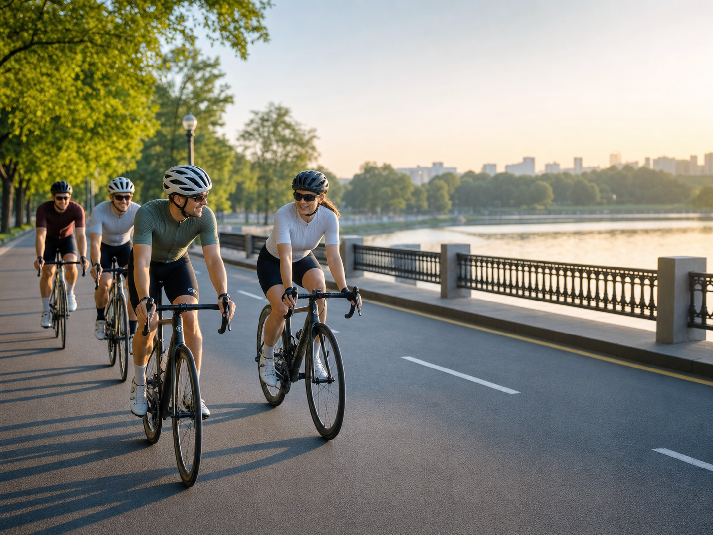
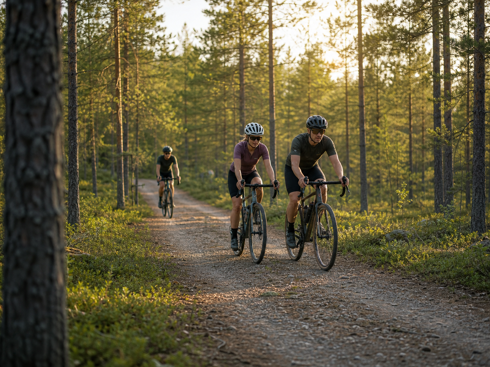
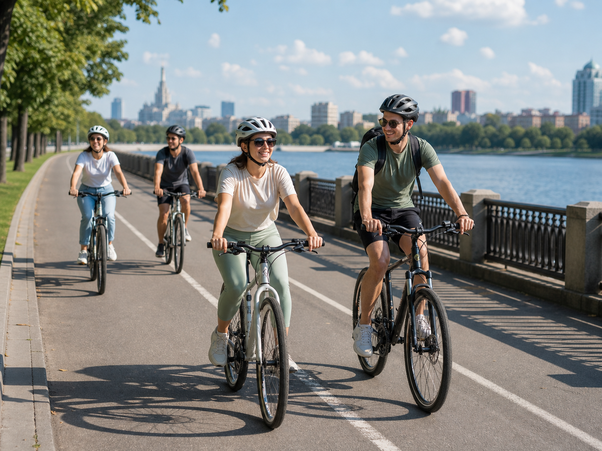
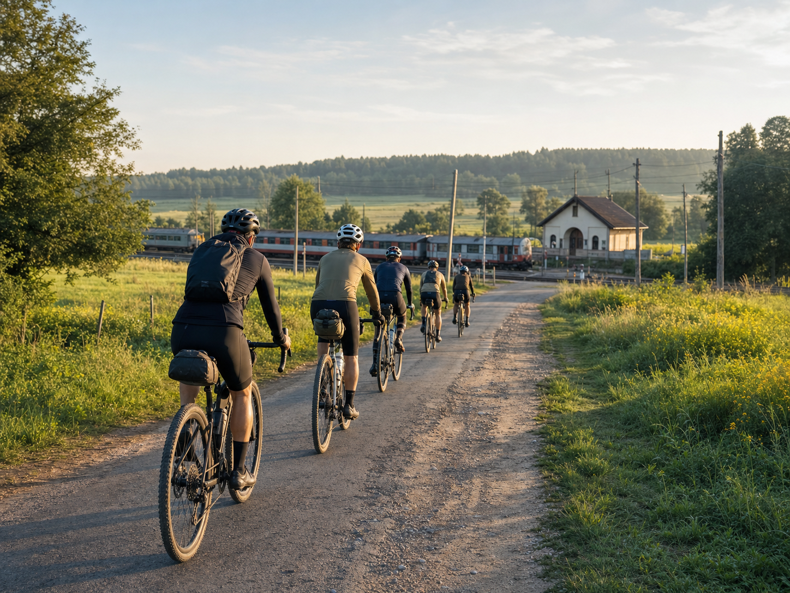

Утренний круг через Серебряный бор
42 км
08:30 · 25 июн
м. Крылатское
Найдите компанию, маршрут и подходящий темп без бесконечного поиска по чатам.
Выберите город, дату и уровень. В карточках сразу видно старт, сложность, длину маршрута и свободные места.




BikeTrips собирает поездки в понятную афишу: участник быстро оценивает маршрут, а организатор получает одну актуальную ссылку вместо длинной переписки.
Указывает старт, время, сложность, длину маршрута, темп и лимит мест.
Фильтры и карточки помогают быстро понять, подходит ли поездка по уровню и формату.
Запись, отмены и изменения маршрута остаются в одной карточке и уведомлениях.